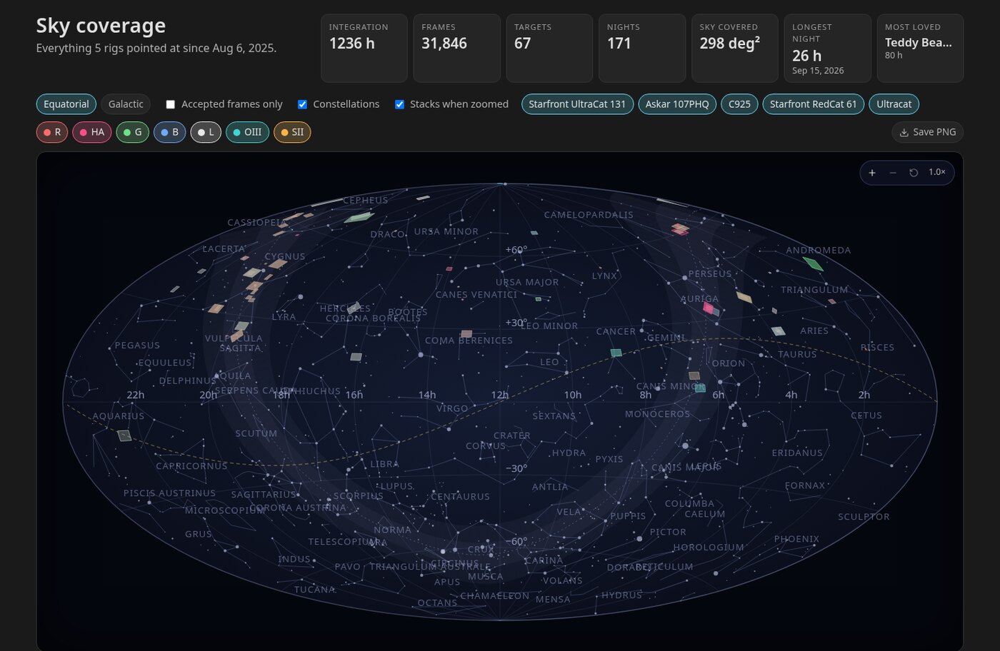
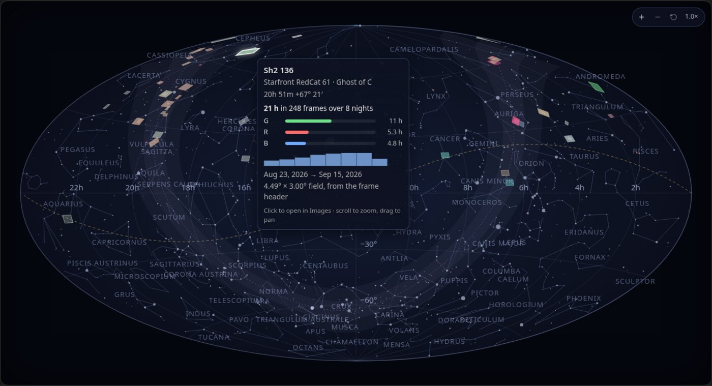
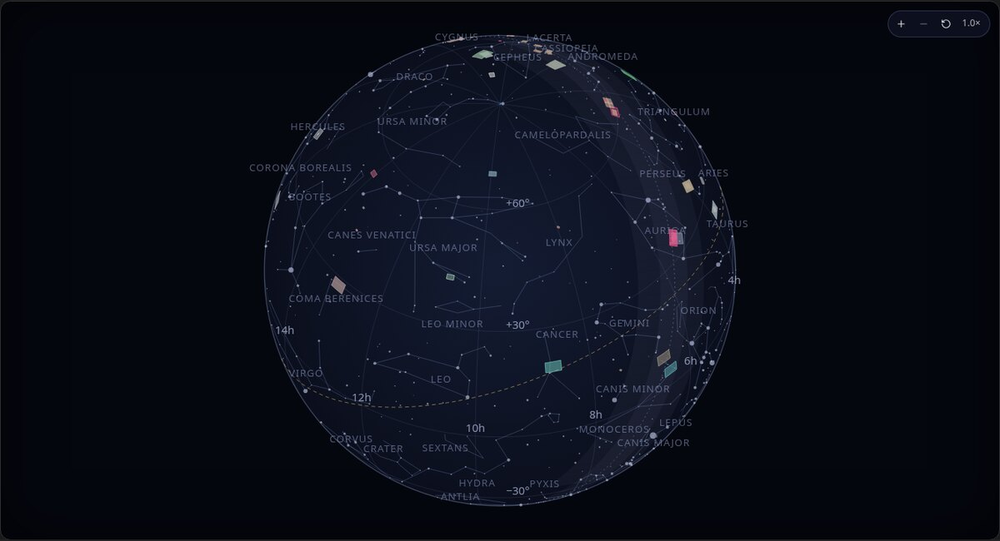
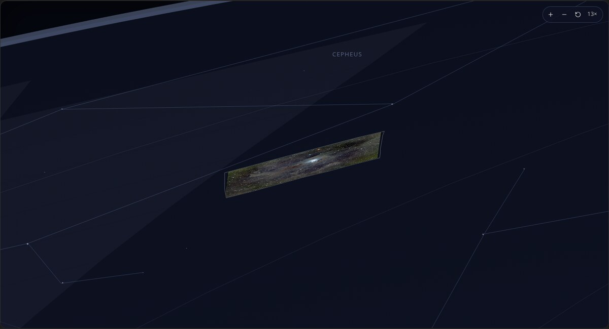
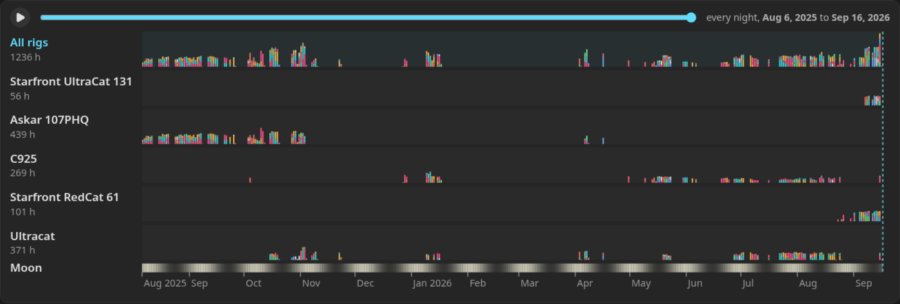
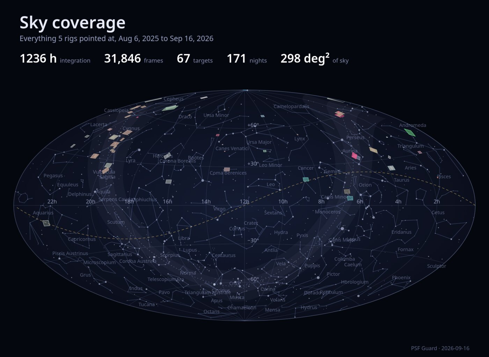

Sky Coverage
The Sky view draws every target from every registered database on one map of the whole sky, and replays the nights that built it. Open it from the Sky tab next to Overview.

The map shows each target as its field on the sky.
Each target is drawn as the patch of sky its camera covers. The field size comes from a plate solve of one of the target's frames when PSF Guard has one, otherwise from the sensor size and focal length in one frame's FITS header together with the rotation the scheduler planned. A target with neither is drawn as a dot. The colour of a field is the mix of filters that went into it, and it is brighter the more hours it has.
Hover a field for its card: the rig, the project, the coordinates, the hours per filter, a sparkline of hours per night, the frame and night counts, the first and last night, and where the field size came from. Click the field to open the target in Images.

Behind the fields sit every star to magnitude 5.5 and the constellation figures and names. The Constellations switch hides the figures and names. The equatorial frame shows right ascension and declination with the galactic plane dashed; the galactic frame shows galactic longitude and latitude with the celestial equator dashed. The ecliptic is the dotted gold line, and a soft band marks the Milky Way.
You can turn the sky from inside or look at it as a globe.
Flat is the sky seen from inside the sphere, the whole of it at once at first. Globe is the same sphere seen from outside. In both, a drag turns the sky sideways and up or down at every zoom, and the projection is centred on wherever you have turned it, so what you look at is drawn with the least distortion. Scroll to zoom about the centre of the view. The buttons in the corner step the zoom and return to the whole sky, and a double click does the same. The page remembers its frame, shape, turn, zoom, and cuts for the browser session, so coming back from Images lands on the same sky.

Zoom in to see your stack previews in place.
Past three times zoom, each field that has a finished stack shows the picture itself inside its outline. PSF Guard uses the target's latest colour stack when one exists, otherwise the mono stack with the most integration. A preview is placed by its reference frame's plate solution when the astrometry cache holds one, carried through the stack's own orientation, so it lands where the pixels really are. Any channel with a solved frame can place a colour stack. Without a solve, the picture is laid into the field by the planned rotation, north up and east left, which can be a flip out. The Stacks when zoomed switch turns the pictures off.

The timeline replays the nights that built the catalog.
Under the map, one lane per rig shows the integration of every night as a bar stacked by filter, with month ticks below and a Moon row whose brightness is the Moon's illumination that night. With more than one rig, an All rigs lane on top sums them. The slider spans the nights the selected rigs and filters captured on and has two thumbs: the right one shows the map as it stood at the end of a night, the left one sets where the story starts, and the year chips under it jump the start to January of a year. Press play to replay from the start thumb. Fields appear as their first frames arrive and brighten as hours accumulate.

A night is the civil date it began on. PSF Guard splits each catalog's day at its quietest hour, the middle of the longest stretch of the UTC day in which that catalog never captured anything, so an evening and the small hours after it share one night whatever the site's longitude, and a rig imaging across noon UTC is not cut in two.
The stat band totals what the map shows.
The chips turn rigs and filters on and off, and Accepted frames only counts graded-in frames alone. Every number on the page follows the same cut: the stat band, the fields, their cards, and the timeline. The band gives:
- the integration in hours, the frame count, the target count, and the night count;
- the sky covered, which is the area the shown fields reach with overlaps counted once, to a twentieth of a degree, and beneath it the fields added together when that is more;
- the pixels on sky, which counts each covered patch at the finest plate scale of any field that reached it, so a long focal length earns more per square degree;
- the longest night, which is the most one rig captured in one night, and which rig; and
- the target with the most hours.
You can save the map as a poster.
Save PNG renders the map at twice its on-screen size, as shown and as zoomed, with the title, the span, and the numbers above it. The button is a browser feature and is not offered in the desktop app.

The numbers come from one request per database.
GET /api/db/{db}/sky/coverage returns, for one database, every target with its coordinates in degrees, per-filter frame and second totals, the nights it was shot, its footprint, and its latest stack preview; every night, target, and filter row; the filters seen; and the totals, including the hour the catalog's nights split at. The page asks every registered database and merges the answers.
The constellation figures, constellation names, and stars drawn behind the fields come from the d3-celestial data set, Copyright (c) 2015, Olaf Frohn, under the BSD 3-Clause License.